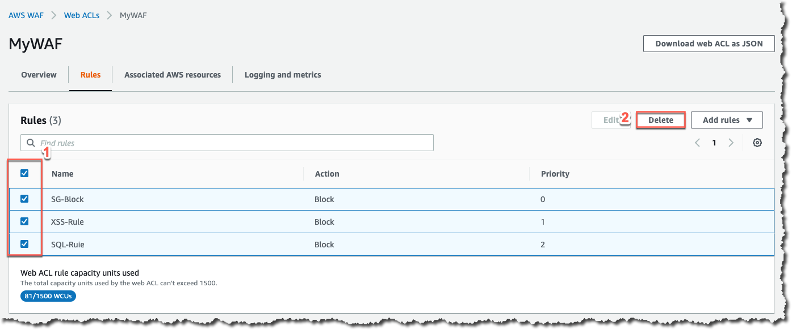
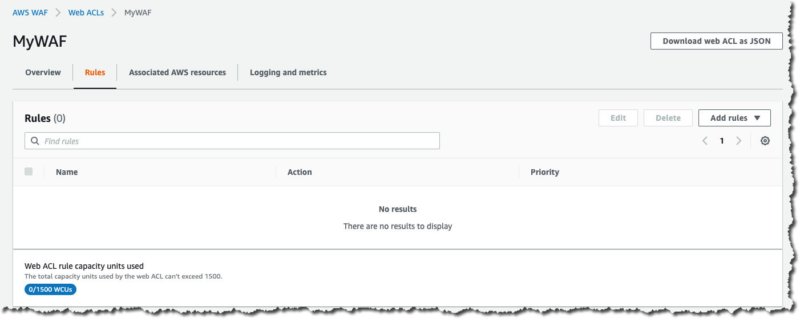

Rule 백업
JSON 기반 Rule
이번에는 AWS WAF v2 에서 새롭게 제공되는 Rule 설정 방식인 JSON 기반 Rule 생성을 해보도록 하겠습니다.
간단한 Rule은 AWS 콘솔의 Rule visual editor를 사용하는 것이 가장 간편한 방법이지만, 모든 웹 ACL에는 JSON 형식 표현이 있습니다. 복잡한 규칙의 경우 JSON 편집기를 사용하여 웹 ACL을 관리하는 것이 가장 쉬운 방법입니다. JSON 형식의 웹 ACL에 대한 전체 구성을 검색하고 필요에 따라 수정한 다음, 콘솔, API 또는 CLI를 통해 제공할 수 있습니다.
기존의 Rule 백업
새로운 Rule을 작성해보기 전에 현재까지 생성된 Rule 을 JSON 기반 문서로 백업해보겠습니다. 기존의 Rule을 다운로드하기 위하여 아래와 같이 Web ACL 의 화면 우측 상단의 “Download web ACL as JSON” 버튼을 클릭한 후 파일을 저장합니다.

저장된 파일은 여러분들이 지금까지 실습을 진행하면서 생성하였던 Rule 정보들을 포함하고 있으며 별다른 추가 설정을 하지 않았다면 아래와 같은 내용을 담고 있습니다.
{ "Name": "MyWAF", "Id": "ea6384e2-d0c4-421a-9cf6-1506f776548d", "ARN": "arn:aws:wafv2:ap-northeast-2:994024026389:regional/webacl/MyWAF/ea6384e2-d0c4-421a-9cf6-1506f776548d", "DefaultAction": { "Allow": {} }, "Description": "", "Rules": [ { "Name": "AWS-AWSManagedRulesCommonRuleSet", "Priority": 0, "Statement": { "ManagedRuleGroupStatement": { "VendorName": "AWS", "Name": "AWSManagedRulesCommonRuleSet" } }, "OverrideAction": { "None": {} }, "VisibilityConfig": { "SampledRequestsEnabled": true, "CloudWatchMetricsEnabled": true, "MetricName": "AWS-AWSManagedRulesCommonRuleSet" } }, { "Name": "AWS-AWSManagedRulesSQLiRuleSet", "Priority": 1, "Statement": { "ManagedRuleGroupStatement": { "VendorName": "AWS", "Name": "AWSManagedRulesSQLiRuleSet" } }, "OverrideAction": { "None": {} }, "VisibilityConfig": { "SampledRequestsEnabled": true, "CloudWatchMetricsEnabled": true, "MetricName": "AWS-AWSManagedRulesSQLiRuleSet" } }, { "Name": "SG-Block", "Priority": 2, "Statement": { "GeoMatchStatement": { "CountryCodes": [ "SG" ] } }, "Action": { "Block": {} }, "VisibilityConfig": { "SampledRequestsEnabled": true, "CloudWatchMetricsEnabled": true, "MetricName": "SG-Block" } }, { "Name": "iphone-Block", "Priority": 3, "Statement": { "ByteMatchStatement": { "SearchString": "iphone", "FieldToMatch": { "SingleHeader": { "Name": "user-agent" } }, "TextTransformations": [ { "Priority": 0, "Type": "LOWERCASE" } ], "PositionalConstraint": "CONTAINS" } }, "Action": { "Block": {} }, "VisibilityConfig": { "SampledRequestsEnabled": true, "CloudWatchMetricsEnabled": true, "MetricName": "iphone-Block" } } ], "VisibilityConfig": { "SampledRequestsEnabled": true, "CloudWatchMetricsEnabled": true, "MetricName": "MyWAF" }, "Capacity": 921 }Rule 설정을 백업하였으니 이번에는 Web ACL 에서 사용하고 있는 Rule 들을 모두 삭제하도록 하겠습니다. Web ACL 의 Rules 탭으로 이동한 후 아래와 같이 현재 설정되어 있는 Rule 을 모두 선택한 후 “Delete” 버튼을 클릭합니다. 
아래와 같이 Rule 삭제를 위하여 확인창이 나타나면 “delete” 를 입력해주고 “Delete” 버튼을 클릭하여 Rule 을 삭제합니다.

아래와 같이 모든 Rule 이 삭제된 상태에서 지금까지 사용했던 공격 방법 및 Singapore 에서의 접속 등이 모두 차단되지 않고 정상적으로 접속되는지 확인합니다. 